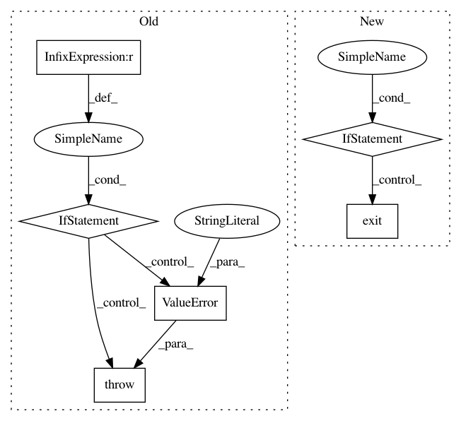

fdeeaff5e452e257bf3a3dd76e25c81304cc4c98,mmdnn/conversion/examples/tensorflow/vis_meta.py,,_main,#,14
Before Change
kill PID
if len(sys.argv) != 3:
raise ValueError("Usage: python vis_meta.py /path/to/model.meta /path/to/log/directory")
// load file
visualize(sys.argv[1], sys.argv[2])
os.system("tensorboard --logdir=" + sys.argv[2])
After Change
parser = _get_parser()
args, unknown_args = parser.parse_known_args()
if not os.path.isfile(args.ckpt):
print("The checkpoint meta file does not exist.")
exit(1)
if not os.path.isdir(args.logdir):
print("The log directory does not exist.")
exit(1)
In pattern: SUPERPATTERN
Frequency: 4
Non-data size: 6
Instances
Project Name: Microsoft/MMdnn
Commit Name: fdeeaff5e452e257bf3a3dd76e25c81304cc4c98
Time: 2020-03-15
Author: linmajia@users.noreply.github.com
File Name: mmdnn/conversion/examples/tensorflow/vis_meta.py
Class Name:
Method Name: _main
Project Name: EducationalTestingService/skll
Commit Name: e8db6660b202733a5764e9e9add869dbde8dbc32
Time: 2014-11-06
Author: nmadnani@ets.org
File Name: skll/utilities/join_features.py
Class Name:
Method Name: main
Project Name: vatlab/SoS
Commit Name: b3192bf244120efa901cc9c46fe36fb6fb501803
Time: 2016-11-19
Author: ben.bog@gmail.com
File Name: sos/__main__.py
Class Name:
Method Name: cmd_run
Project Name: ray-project/ray
Commit Name: 20ef4a860325d1735df038d4e4b8c7de5e013ed3
Time: 2020-03-11
Author: sven@anyscale.io
File Name: rllib/tests/test_multi_agent_pendulum.py
Class Name:
Method Name: